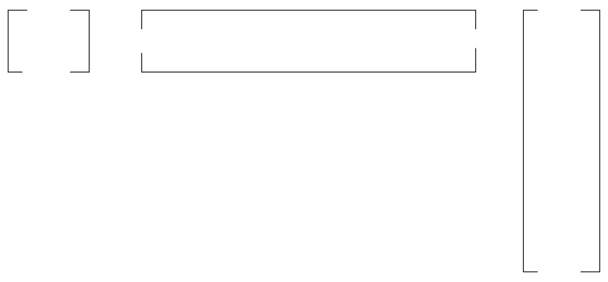

Design & Analysis: Algorithms
17: Dynamic Programming
Schedule
| # | date | topic | description |
|---|---|---|---|
| 1 | 09-Jan-2023 | Introduction and Introductions | |
| 2 | 11-Jan-2023 | Basics of Algorithm Analysis | |
| 16-Jan-2023 | Holiday | ||
| 3 | 18-Jan-2023 | Asymptotic Analysis | hw1 |
| 4 | 23-Jan-2023 | Recurrence Relations: Substitution | |
| 5 | 25-Jan-2023 | Recursion Trees and the Master Theorem | |
| 6 | 30-Jan-2023 | Recurrence Relations: Annihilators | |
| 7 | 1-Feb-2023 | Recurrence Relations: Transformations | hw2, hw1 |
| 8 | 6-Feb-2023 | Heap & Invariants | |
| 9 | 8-Feb-2023 | Queue & Qsort | |
| 10 | 13-Feb-2023 | Analyzing RQsort | |
| 11 | 15-Feb-2023 | Comparison-based Sorting Analysis | hw3, hw2 |
| 12 | 20-Feb-2023 | Dictionary | |
| 13 | 22-Feb-2023 | Open Address Hashing & Refresher | |
| 14 | 27-Feb-2023 | Midterm exam | midpoint |
| 15 | 1-Mar-2023 | Binary Search Trees I | |
| 16 | 6-Mar-2023 | Binary Search Trees II | hw4, hw3 |
| 17 | 8-Mar-2023 | Balanced Binary Search Trees |
| # | date | topic | description |
|---|---|---|---|
| 13-Mar-2023 | Spring Break | ||
| 15-Mar-2023 | Spring Break | ||
| 18 | 20-Mar-2023 | Dynamic Programming I | |
| 19 | 22-Mar-2023 | Dynamic Programming II | |
| 20 | 27-Mar-2023 | DP 2.5 + Greedy Algorithms | hw5, hw4 |
| 21 | 29-Mar-2023 | Graphs and Traversals | |
| 22 | 3-Apr-2023 | ||
| 23 | 5-Apr-2023 | ||
| 24 | 10-Apr-2023 | hw6, hw5 | |
| 25 | 12-Apr-2023 | ||
| 26 | 17-Apr-2023 | ||
| 27 | 19-Apr-2023 | ||
| 28 | 24-Apr-2023 | hw6 | |
| 29 | 26-Apr-2023 | Final exam | |
| 30 | 2-May-2022 | ||
| 31 | 4-May-2022 |
Outline of the lecture
- Intro to Dynamic Programming
- String Alignment
- Matrix Chain Multiplication
Intro to Dynamic Programming
“Those who cannot remember the past are doomed to repeat it.”
- George Santayana, The Life of Reason, Book I: Introduction and Reason in Common Sense (1905)
What is Dynamic Programming?
- Dynamic Programming is basically “Divide and Conquer” with memorization
- Basic Trick is: Don’t solve the same problem more than once!
Fibonacci Example
def fib(n):
if n < 2: return n
return fib(n-1) + fib(n-2)
- What is the runtime of Fib?
- Except for recursive calls, the entire algorithm takes a constant number of steps.
- If $T(n)$ is the run time of the algorithm on input $n$, then we can say that:
- $T (0) = T (1) = 1$,
- $T (n) = T (n − 2) + T (n − 1) + 1$
- It’s easy to show by induction that $T (n) = 2F_{n+1} − 1$.
Runtime of fib
- The recurrence is $T(0) = 1$, $T(1) = 1$, and $T (n) = T (n − 1) + T (n − 2) + 1$
- The annihilator for $T$ is $(\bm{L} − \phi)(\bm{L} − \hat\phi)(\bm{L} − 1)$, where $\phi = \frac{1+\sqrt{5}}{2}$ and $\hat\phi = \frac{1-\sqrt{5}}{2}$
- From “Lookup Table”, we see that the sequence $T$ must be of the form $< c_1 \phi^n + c_2 \hat\phi^n + c_3>$
- All we have left to do is solve for $c_1$, $c_2$, and $c_3$
- Can use the base cases to solve for these
Finding the Constants
- We know $T = < c_1 \phi^n + c_2\hat\phi^n + c_3>$, where $\phi = \frac{1+\sqrt{5}}{2}$ and $\hat\phi = \frac{1-\sqrt{5}}{2}$
- We know \begin{align} T (0) &= c_1 + c_2 + c_3 = 1 \\ T (1) &= c_1 \phi + c_2\hat\phi + c_3= 1 \\ T (2) &= c_1 \phi^2 + c_2\hat{\phi}^2 + c_3= 3 \\ \end{align}
- Follows, $c_1 = 1 + \frac{1}{\sqrt{5}}$, $c_2 = 1 -\frac{1}{\sqrt{5}}$, and $c_3 = -1$
The Runtime
- The final explicit formula for $T(n)$ is thus: $$T(n) = \left(1 + \frac{1}{\sqrt{5}}\right)\phi^n + \left(1 - \frac{1}{\sqrt{5}}\right)\hat{\phi}^n - 1$$
This is $\Theta(\phi^n)$ for $\phi$ that is greater than 1.
This is very bad!
The problem
- The reason
fibis so slow is that it computes the same Fibonacci numbers over and over - In general, there are $F_{k−1}$ recursive calls to
fib(n-k) - We can greatly speed up the algorithm by writing down the results of the recursive calls and looking them up if needed
dynamic programming version
def fib(n):
if n < 2: return n
return fib(n-1) + fib(n-2)
def dp_fib(n, F):
if n < 2: return n
if n not in F:
F[n] = dp_fib(n-1, F) + dp_fib(n-2, F)
return F[n]
# how to call it
dp_fib(68, {})
Analysis
- For every value of $x$ between 1 and $n$,
dp_fib(x, F)is called exactly one time. - Each call does constant work
- Thus runtime of
dp_fib(x, F)is $\Theta(n)$ - a HUGE savings
But boy! is it ugly!
def fib(n):
if n < 2: return n
return fib(n-1) + fib(n-2)
def dp_fib(n, F):
if n < 2: return n
if n not in F:
F[n] = dp_fib(n-1, F) + dp_fib(n-2, F)
return F[n]
# how to call it
dp_fib(68, {})
memoization w/ decorators
from functools import wraps
def memoize(func):
cache = {} # Stored subproblem solutions
@wraps(func) # Make wrap look like func
def wrap(*args): # The memoized wrapper
n = args[0] # n-th Fibonacci
if n not in cache: # Not already computed?
cache[n] = func(*args) # Compute & cache the solution
return cache[n]
return wrap
@memoize
def fib(n):
if n < 2: return n
return fib(n-1) + fib(n-2)
Take Away
Dynamic Programming is different than Divide and Conquer in
the following ways:
- “Divide and Conquer” divides problem into independent subproblems, solves the subproblems recursively and then combines solutions to solve original problem
- Dynamic Programming is used when the subproblems are not independent, i.e. the subproblems share subsubproblems
- For these kinds of problems, divide and conquer does more work than necessary
- Dynamic Programming solves each subproblem once only and saves the answer in a table for future reference
String Alignment
The Pattern for DP
- Formulate the problem recursively. Write down a formula for the whole problem as a simple combination of answers to smaller subproblems
- Build solutions to your recurrence from the bottom up. Write an algorithm that starts with the base cases of your recurrence and works its way up to the final solution by considering the intermediate subproblems in the correct order.
String distances
Hamming Distance
For strings $X$, $Y$ where $| X | = | Y |$, Hamming distance is minimum # substitutions needed to turn one into the other
Edit Distance
For strings $X$, $Y$ edit distance is minimum # of edits (substitutions, insertions, deletions) needed to turn one into the other
How to compute Hamming distance?
def hamming_distance(x, y):
????
Strategy
Walk along both strings. For each position, compare the characters in both strings at that position. If not equal, increment Hamming distance.
Hamming Distance
# BONUS: we solve it for strings of arbitrary lengths
from itertools import zip_longest
def hamming_distance(x, y):
return sum(c1 != c2 for c1, c2 in zip_longest(x, y))
Edit Distance
def edit_distance(x, y):
????
Edit Distance
The edit distance between two words is the minimum number of letter insertions, letter deletions, and letter substitutions required to transform one word into another. For example, the edit distance between FOOD and MONEY is at most four:FOOD → MOOD → MON∧D → MONED → MONEY
String Alignment
- Better way to display this process:
- Place the words one above the other in a table
- Put a gap in the first word for every insertion and a gap in the second word for every deletion
- Columns with two different characters correspond to substitutions
- Then the number of editing steps is just the number of columns that don’t contain the same character twice
Example
- String Alignment for “FOOD” and “MONEY”:
F O O D M O N E Y - It’s not too hard to see that we can’t do better than four for the edit distance between “Food” and “Money”
Example II
- Unfortunately, it can be more difficult to compute the edit
distance exactly. Example:
A L G O R I T H M A L T R U I S T I C
Key Observation
- If we remove the last column in an optimal alignment, the remaining alignment must also be optimal
- Easy to prove by contradiction: Assume there is some better subalignment of all but the last column. Then we can just paste the last column onto this better subalignment to get a better overall alignment.
- Note: The last column can be either:
- a blank on top aligned with a character on bottom,
- a character on top aligned with a blank on bottom or
- a character on top aligned with a character on bottom
Edit distance
Edit distance
Dynamic Programming solution
- To develop a DP algorithm for this problem, we first need to find a recursive definition
- Assume we have a $m$ length string $A$ and an $n$ length string $B$
- Let $E(i, j)$ be the edit distance between the first $i$ characters of $A$ and the first $j$ characters of $B$
- Then what we want to find is $E(n, m)$
Recursive definition
- Say we want to compute $E(i, j)$ for some $i$ and $j$
- Further say that the “Recursion Fairy ” can tell us the solution to $E(i', j')$, for all $i' \leq i$, $j' \leq j$, except for $i' = i$ and $j' = j$
- Can we compute $E(i, j)$ efficiently with help from the our friend?
Recursive definition
3 possible cases- Insertion: $E(i, j) = 1 + E(i − 1, j)$
- Deletion: $E(i, j) = 1 + E(i, j − 1)$
- Substitution: If $a_i = b_j$ , $E(i, j) = E(i−1, j−1)$, else $E(i, j) = E(i − 1, j − 1) + 1$
Summary
Let $I(A[i] \ne B[j]) = 1$ if $A[i]$ and $B[j]$ are different, and 0 if they are the same. Then: $$ E(i,j) = \min \left\{ \begin{align} E(i -1, j ) + 1\\ E(i, j-1) + 1\\ E(i-1, j-1) + I(A[i] \ne B[j])\\\end{align} \right\} $$Base case(s)
Not too hard to see that- $E(0, j) = j$ for all $j$, since the $j$ characters of $B$ must be aligned with blanks
- Similarly, $E(i, 0) = i$ for all $i$
Recursive algorithm
- We now have enough info to directly create a recursive algorithm
def edit_distance_rec(x, y): if len(x) == 0: return len(y) if len(y) == 0: return len(x) diag = edit_distance_rec(x[:-1], y[:-1]) + int(x[-1] != y[-1]) vert = edit_distance_rec(x[:-1], y) + 1 horz = edit_distance_rec(x, y[:-1]) + 1 return min(diag, vert, horz) - The run time of this recursive algorithm would be given by the following recurrence: \begin{align} T(m, 0) &= T(0, n) = O(1)\\ T(m,n) & = T(m, n-1) + T(m-1, n) + T(n-1, m-1) + O(1) \end{align}
- Solution: $T (n, n) = \theta(1 + 2^{\frac{n}{2}})$, which is terribly, terribly slow.
Wait, but why?
n = 0
def edit_distance_rec(x, y):
global n
if len(x) == 0: return len(y)
if len(y) == 0: return len(x)
if x == "Shake" and y == "shake": n += 1
diag = edit_distance_rec(x[:-1], y[:-1]) + int(x[-1] != y[-1])
vert = edit_distance_rec(x[:-1], y) + 1
horz = edit_distance_rec(x, y[:-1]) + 1
return min(diag, vert, horz)
dist = edit_distance_rec('Shakespeare', 'shake spear')
print(n)
8989
Better Idea
- We can build up a $m \times n$ table which contains all values of $E(i, j)$
- We start by filling in the base cases for this table: the entries in the $0^{th}$ row and $0^{th}$ column
- To fill in any other entry, we need to know the values directly above, to the left and above and to the left.
- Thus we can fill in the table in the standard way: left to right and top down to ensure that the entries we need to fill in each cell are always available
def edit_distance_DP(x, y):
""" Calculate edit distance between sequences x and y using
matrix dynamic programming. Return distance. """
# initialize an empty matrix
E = zeros((len(x)+1, len(y)+1), dtype=int)
def edit_distance_DP(x, y):
""" Calculate edit distance between sequences x and y using
matrix dynamic programming. Return distance. """
# initialize an empty matrix
E = zeros((len(x)+1, len(y)+1), dtype=int)
# Fill in the values for the empty sub-strings
E[0, 1:] = range(1, len(y)+1)
E[1:, 0] = range(1, len(x)+1)
def edit_distance_DP(x, y):
""" Calculate edit distance between sequences x and y using
matrix dynamic programming. Return distance. """
# initialize an empty matrix
E = zeros((len(x)+1, len(y)+1), dtype=int)
# Fill in the values for the empty sub-strings
E[0, 1:] = range(1, len(y)+1)
E[1:, 0] = range(1, len(x)+1)
for i in range(1, len(x)+1):
for j in range(1, len(y)+1):
delt = int(x[i-1] != y[j-1])
E[i, j] = min(E[i-1, j-1]+delt, E[i-1, j]+1, E[i, j-1]+1)
return E[len(x), len(y)]
Analysis
- Let n be the length of the first string and m the length of the second string
- Then there are $\Theta(nm)$ entries in the table, and it takes $\Theta(1)$ time to fill each entry
- This implies that the run time of the algorithm is $\Theta(nm)$
Could we have filled the cells in a different order?
Could we have filled the cells in a different order?
Could we have filled the cells in a different order?
But where and what are the 2 edits?
Traceback corresponds to an optimal alignment (edit transcript)
At each step ask which neighbor ($\leftarrow$, $\nwarrow$, $\rightarrow$) gave the minimum
String Alignment: Analysis
- Let n be the length of the first string and m the length of the second string
- Then there are $\Theta(nm)$ entries in the table, and it takes $\Theta(1)$ time to fill each entry
- This implies that the run time of the algorithm is $\Theta(nm)$
- Worst case: traceback never moves diagonally requiring $O(n+m)$
In Class Exercise 
- Create a string alignment table for the two strings “abba” and “bab”. Put “abba” at the top of the table and “bab” on the left side
- $Q_i$: $(i = 1, 2, . . . , 5)$ What is the $i^{th}$ row of your table
- $Q_6$: What is the minimum edit distance and how many alignments achieve it?
Take Away
To solve the string alignment problem, we did the following:- formulated the problem recursively
- built a solution to the recurrence from the bottom up
Matrix Chain Multiplication
Problem
- We are given an ordered sequence of n matrices, $A_1, A_2, \dots , A_n$, where for $i = 1, 2, \dots , n$, matrix $A_i$ has dimension $p_{i−1} \times p_i$
- We want to compute the product, $A_1A_2 \cdots A_n$ as quickly as possible.
- In particular, we want to fully parenthesize the expression above so there are no ambiguities about the order in which the matrices are multiplied
- A product of matrices is fully parenthisized if it is either a single matrix, or the product of two fully parenthesized matrix products, sorrounded by parentheses
Parenthesizing Matrices
- There are many ways to parenthesize the matrices
- Each way gives the same output (because of associativity of matrix multiplications)
- However the way we parenthesize will effect the time to compute the output
- Our Goal: Find a parenthesization which requires the minimal number of scalar multiplications
Example
- In this example, it’s much better to multiply the last two matrices first (this will give us a short, narrow matrix like the square matrix on the left)
- Worse to multiply the first two matrices first (this gives us a short wide matrix in the middle)
- In general, our goal is to find ways to always create narrow and short resulting matrices.
A Problem
Problem: There can be many ways to parenthesize. e.g.- $(A_1(A_2(A_3A_4)))$
- $(A_1((A_2A_3)A_4))$
- $((A_1A_2)(A_3A_4))$
- $((A_1(A_2A_3))A_4)$
- $(((A_1A_2)A_3)A_4)$
A Problem
- Let $P (n)$ be the number of ways to parenthesize n matrices. Then $P (1) = 1$
- For $n \geq 2$, we know that a fully parenthesized product is the product of two fully parenthesized products, and the split can occur anywhere from $k = 1$ to $k = n − 1$.
- Hence for $n \geq 2$: $ P (n) = \sum_{k=1}^{n-1 }P (k)P (n − k) $
- The solution to this recurrence is $\Omega(2^n)$ (derivation is left as a homework)
The Pattern
-
Can we develop a DP Solution to this problem?
- Formulate the problem recursively. Write down a formula for the whole problem as a simple combination of answers to smaller subproblems
- Build solutions to your recurrence from the bottom up. Write an algorithm that starts with the base cases of your recurrence and works its way up to the final solution by considering the intermediate subproblems in the correct order.
Key Observation
- Let $A_{i..j}$ (for $i \le j$) be the matrix that results from evaluating the product $A_iA_{i+1} \cdots A_j$
- Note that if $i < j$, then for some value of $k$, $i \leq k < j$, we must first compute $A_{i..k}$ and $A_{k+1..j}$ , and then multiply them together to get $A_{i..j}$
- The cost of this particular parenthesization is then the cost of computing $A_{i..k}$ plus the cost of computing $A_{k+1..j}$ plus cost of multiplying $A_{i..k}$ by $A_{k+1..j}$
Key Observation: one more time
- Let $A_{i..j}$ (for $i \leq j$) be the matrix that results from evaluating the product $A_iA_{i+1} \cdots A_j$
- Imagine we are computing $A_{i..j}$
- The last multiplication we do must look like this:
$$ A_{i..j} = (A_{i..k}) \times (A_{k+1..j} ) $$for some $k$ between $i$ and $j − 1$
- Then total cost to compute $A_{i..j}$ is:
- cost to compute $A_{i..k} +$
- cost to compute $A_{k+1..j} +$
- cost to multiply $A_{i..k}$ and $A_{k+1..j}$
The Recursive Formulation
- For any integers $x$, $y$, let $m(x, y)$ be the minimum cost of computing $A_{x..y}$
- Then for any $k$ between $i$ and $j − 1$,
\begin{align} m(i, j) \leq & \mbox{ optimal cost to compute } A_{i..k} +\\ & \mbox{ optimal cost to compute } A_{k+1..j} +\\ & \mbox{ cost to multiply } A_{i..k} \mbox{ and } A_k+1..j\\ \end{align}
- In other words:
\begin{align} m(i, j) \leq & m(i, k) +\\ & m(k + 1, j) +\\ & \mbox{ cost to multiply } A_{i..k} \mbox{ and } A_{k+1..j} \end{align}
The Cost to multiply 2 matrices
- $A_{i..k}$ is a $p_{i−1} \times p_k$ matrix
- $A_{k+1..j}$ is a $p_k \times p_j$ matrix
- Thus $A_{i..k}A_{k+1..j}$ takes $p_{i−1}p_k p_j$ operations
- Hence we have: \begin{align} m(i, j) \leq & m(i, k) +\\ & m(k + 1, j) +\\ & p_{i−1}p_k p_j \end{align}
The Recursive Formulation
- Let $m(i, j)$ be the minimum cost of computing $A_{i,j}$
- We’ve shown that $m(i, j) \leq m(i, k) + m(k + 1, j) + p_{i−1}p_k p_j$ for any $k = i, i + 1, \dots , j − 1$
- Further note that the optimal parenthesization must use some value of $k = i, i + 1, \dots , j − 1$. So we need only pick the best
- Thus we have:
\begin{align} m(i, j) &= 0 \mbox{ if } i = j\\ m(i, j) &= \min_{i\leq k< j} \{m(i, k) + m(k + 1, j) + p_{i−1}p_k p_j \} \end{align}
The Recursive Solution
- We now have enough information to write a recursive function to solve the problem
- The recursive solution will have runtime given by the following recurrence:
- $T (1) = 1$,
- $T (n) = 1 + \sum^{n−1}_{k=1} (T (k) + T (n − k) + 1)$
- Unfortunately, the solution to this recurrence is $\Theta(2^n)$ (see the textbook)
- Yet, I challenge you to implement the recursive solution and use memoization.
Recursive Implementation
import sys
# Matrix A[i] has dimension p[i-1] x p[i]
def MatrixChainOrder(p, i, j):
if i == j: return 0
_min = sys.maxsize
for k in range(i, j):
count = MatrixChainOrder(p, i, k)\
+ MatrixChainOrder(p, k + 1, j)\
+ p[i-1] * p[k] * p[j]
if count < _min: _min = count;
return _min;
# test
arr = [1, 2, 3, 4, 3];
print("Minimum number of multiplications is ",
MatrixChainOrder(arr, 1, len(arr)-1));
Note, there are $n$ matrices but $n+1$ dimensions. The matrices are numbered from $1$ to $n-1$, while dimensions go from $0$ to $n-1$. The test code above starts in a top-down manner with matrix $1$ through $4$ - what we need to compute. However, there are $5$ dimensions.
DP Solution
- Note that we must solve one subproblem for each choice of $i$ and $j$ satisfying $1\leq i \leq j \leq n$
- This is only $\left({n\over 2}\right) + n = \Theta(n^2 )$ subproblems
- The recursive algorithm encounters each subproblem many times in the branches of the recursion tree.
- However, we can just compute these subproblems from the bottom up, storing the results in a table (this is the DP solution)
DP Implementation
import sys
# Matrix Ai has dimension p[i-1] x p[i] for i = 1..n
def MatrixChainOrder(p, n):
m = [[0 for x in range(n)] for x in range(n)]
# cost is zero when multiplying one matrix.
for i in range(1, n): m[i][i] = 0
for L in range(2, n):
for i in range(1, n-L + 1):
j = i + L-1
m[i][j] = sys.maxsize
for k in range(i, j):
q = m[i][k] + m[k + 1][j] + p[i-1]*p[k]*p[j]
if q < m[i][j]: m[i][j] = q
return m[1][n-1]
# Test
arr = [1, 2, 3, 4, 3]
print("Minimum number of multiplications is " +
str(MatrixChainOrder(arr, len(arr))))
Note, there are $n$ matrices but $n+1$ dimensions. The matrices are numbered from $1$ to $n-1$, while dimensions go from $0$ to $n-1$.
"Pseudocode"
- This code computes the optimal cost and can be modified to compute parenthesization that achieves that cost.
- It uses an $m$ array to store the optimal costs of computing $m(i, j)$. It may also use an additional array, say $s$ , where $s(i, j)$ stores the $k$ value which gives $m(i, j)$.
- The parenthesization can be recovered from the s array using the pseudocode that you will produce as part of your homework when solving this problem.
import sys
# Matrix Ai has dimension p[i-1] x p[i] for i = 1..n
def MatrixChainOrder(p, n):
m = [[0 for x in range(n)] for x in range(n)]
# cost is zero when multiplying one matrix.
for i in range(1, n): m[i][i] = 0
for L in range(2, n):
for i in range(1, n-L + 1):
j = i + L-1
m[i][j] = sys.maxsize
for k in range(i, j):
q = m[i][k] + m[k + 1][j] + p[i-1]*p[k]*p[j]
if q < m[i][j]: m[i][j] = q
return m[1][n-1]
# Test
arr = [1, 2, 3, 4, 3]
print("Minimum number of multiplications is " +
str(MatrixChainOrder(arr, len(arr))))
Analysis
- This code has three nested loops, each of which takes on at most $n − 1$ values, and the inner loop takes $O(1)$ time.
- Thus the runtime is $O(n^3)$
- The algorithm also requires $\Theta(n^2)$ space
Example I
- Consider the sequence of three matrices, $A_1, A_2, A_3$ whose dimensions are given by the sequence $3, 1, 2, 1$ (i.e. $p_0 = 3$, $p_1 = 1$, $p_2 = 2$, $p_3 = 1$)
- Let’s construct the tables giving the optimal parenthesization
- The $(i, j)$ entry of the first table will give the optimal cost for computing $A_{i..j}$ , the $(i, j)$ entry of the second table will give a $k$ value which achieves this optimal cost
Example II
- Consider the sequence of three matrices, $A_1, A_2, A_3, A_4$ whose dimensions are given by the sequence $3, 1, 2, 1, 2$ (i.e. $p_0 = 3$, $p_1 = 1$, $p_2 = 2$, $p_3 = 1$, $p_4 = 2$)
- Let’s construct the tables giving the optimal parenthesization
- The $(i, j)$ entry of the first table will give the optimal cost for computing $A_{i..j}$ , the $(i, j)$ entry of the second table will give a $k$ value which achieves this optimal cost
In Class Exercise
- Consider the sequence of three matrices, $A_1$, $A_2$, $A_3$ whose dimensions are given by the sequence $1, 2, 1, 2$ (i.e. $p_0 = 1$, $p_1 = 2$, $p_2 = 1$, $p_3 = 2$)
- What are the m array and s array for these inputs?
- What is the optimal parenthesization?